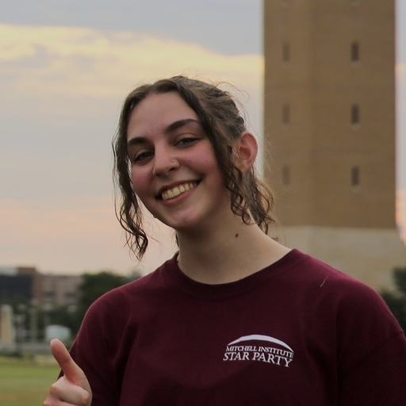

The Survey
Catching massive galaxies just after they quench.
SQuIGGLE targets massive post-starburst galaxies at intermediate redshift — a window where the byproducts of rapid quenching are abundant enough to assemble statistical samples from large spectroscopic surveys, yet near enough for detailed multi-wavelength follow-up.
We are assembling a multi-wavelength portrait of this rare transitional population, combining rest-optical spectroscopy (SDSS · DESI · Keck · Magellan · Gemini) to constrain recent star formation histories, imaging (HST · Subaru/HSC) to map structures, cold gas and dust (ALMA), AGN diagnostics (VLA · SDSS · WISE), and, most recently, dust-obscured star formation (JWST/NIRSpec IFU).
Publications
The SQuIGGLE paper archive.
The Team
The people building SQuIGGLE.


Mary Knowlton
Undergraduate · Texas A&M